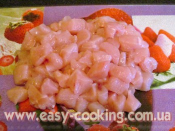
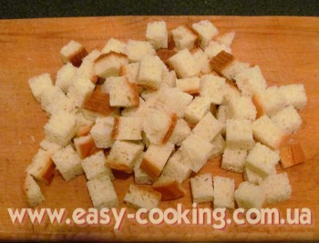
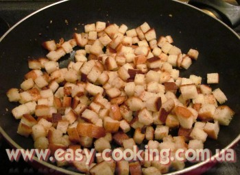

Салат “Цезар”

Надіюся, вам, як і мені, буде цікаво трошки почути про історію створення салату “Цезар”. Як не дивно (хоча насправді не дивно взагалі), з відомим усім нам з уроків історії Юлієм Цезарем цей салат ніякого зв’язку не має. Назва Цезар походить від прізвища кулінара-ресторатора з італійським корінням Цезаря Кардіні, який жив, мешкав і займався ресторанним бізнесом на кордоні між Мексикою та Штатами на початку ХХ століття. Авторство, яке йому приписують, обросло цікавими легендами, але насправді не доведене.
Найбільш ранній, а тому ніби як класичний, варіант салату “Цезар”, складався з трьох основних інгредієнтів: салату-ромен, грінок і тертого пармезану. Плюс, оригінальна заправка, яка складался з напівварених яєць, часнику, оливкової олії та чорного перцю. Пізніше туди почали додавати рибний вустерський соус (в сучасному варіанті – з анчоусами).
З часом вигляд салату змінювався і тепер присутній у багатьох кухнях в дуже різних інтерпретаціях. У мене сьогодні рецет салату “Цезар” з курячим філе, ароматними грінками, помідорами-черрі та соусом на варених жовтках. Без анчоусів, бо це питання смакових уподобань усієї родини.
Інгредієнти
Салат:
- 150 г батона
- 300 г курячого філе
- 1 великий пучок салату
- 50 г пармезану
- 1 зубець часнику
- оливкова олія
Заправка:
- 2 варені жовтки
- 2 ч.л. гірчиці
- 1 зубчик часнику
- 1 ст.л. лимонного соку
- 1 ч.л. оцту
- 100 мл оливкової олії
- сіль, перець
Приготування

Куряче філе наріжте дрібними кубиками.
Обсмажте шматочки курячого філе на сковорідці до утворення рум’яної скоринки
Зубець часнику витискаємо в олію для смаження грінок (сухариків)

Батон нарізаємо кубиками.

Обсмажуємо шматочки батона на олії з часником, доки почнуть хрумтіти.
Далі готуємо заправку. Варені жовтки розтираємо з гірчицею, додаємо оцет та лимонний сік.
Додаємо часник, олію, сіль та перець і змішуємо все до однорідної консистенції.
На тарілку викладаємо зелений салат.
На салат викладаємо смажене куряче філе, сухарики та помідори.
Поливаємо соусом.
Зверху натираємо пармезан. Смачного, бо це дійсно смачно!